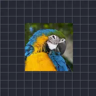

Автотряска

Случайно смещает слой с течением времени в заданных пределах.
Автотряска снова и снова перемещает слой в случайных направлениях без всяких ключевых кадров. Амплитуда — насколько далеко он смещается, Частота — сколько встряхиваний в секунду, а Угол — основное направление. Сид и Эволюция меняют случайный узор, а Z-тряска добавляет тряску по глубине.
- Тряска камеры: Амплитуда от 15 до 30, Частота от 6 до 10 на группе, в которой вся сцена.
- Удар: анимируйте Амплитуду от большого значения до 0 за полсекунды.
- Добавьте после неё Размытие в движении, чтобы тряска размывалась так, как это сделала бы камера.
Настройки
| Настройка | Тип | Диапазон | По умолчанию |
|---|---|---|---|
| Амплитуда | Число | от 0 до 2000 | 50 |
| Частота | Число | от 0 Hz до 16 Hz | 2 Hz |
| Эволюция | Число | от 0 до 2000 | 0 |
| Сид | Число | от 0 до 5 | 0 |
| Угол | Угол | от -3600° до 3600° | 45° |
| Слабина | Число | от 0% до 100% | 25% |
| Z-тряска | Число | от 0 до 2000 | 0 |
| Узор | Выбор | Классический, Стандартный | Стандартный |
| Стиль | Выбор | Классический, Стандартный | Классический |